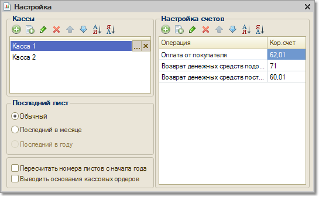

Меню Отчеты > Денежные средства > Кассовая книга (Оперативный учет)
Отчет "Кассовая книга" формирует регламентную форму кассовой книги по даннымоперативного учета . Данный отчет формируется по организации, выбранной в настройках отчета за указанный период, а также по выбранным в настройках кассам/кассе данной организации. Можно также распечатать обложку кассовой книги. При формировании кассовой книги запоминается номер сформированного листа, который хранится в регистре сведений "Номера листов кассовой книги".
Для оперативного учета нужно настроить корреспонденцию счетов, которая будет проставляться в кассовой книге в зависимости от выбранной операции.
Параметры формирования отчета
По кнопке "Настройка" для кассовой книги в оперативном учете вызывается форма настройки параметров отчета:

После настройки параметров формирования отчета закройте форму "Настройка" и щелкните кнопку "Сформировать" для формирования отчета.